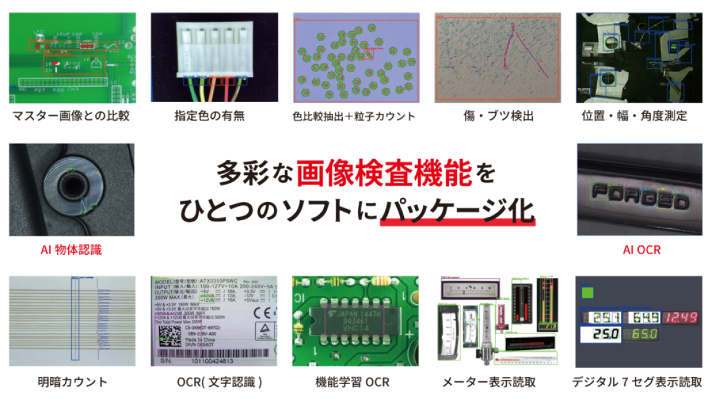
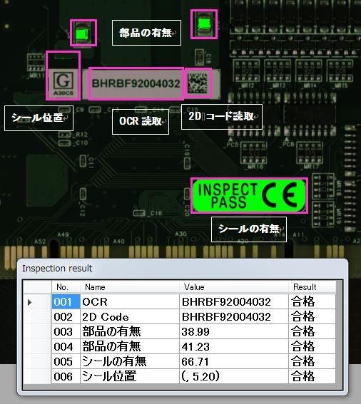

汎用性の高い多彩な検査機能

複数の検査内容を一括検査できます
ひとつの検査設定には最大で999個の検査枠を設定できます。検査枠に対して個別に使用する機能を設定でき、複数の検査内容を一括で検査可能です（※同一の照明条件下に限ります）
直感的な簡単検査設定
一般的なWindowsアプリを使う感覚で、ソフトのインストールや検査設定ができます。
難しいプログラミングの知識は不要で、「厳しい」「甘い」など直感的に検査設定ができます。
寸法角度検査のエッジ（色や明るさの境目）検出も、視覚的に検出したいエッジが”どちら側にあるか”を選ぶだけ。


拡張性の高い外部制御機能
特別な知識が無くてもI/Oユニットを使用することでスイッチやパトライト、ブザーなどの機器と簡単に連携できます。ユニットとパソコンはUSBケーブルで接続し、入出力機器は線を繋ぐだけ（※機器の仕様は必ずご確認ください）。 外部アプリケーションとの通信や、PLCとの連携にも対応しております。 Socket通信コマンドやRS232C通信コマンドを利用して検査トリガーをかけたり設定を切り替えたりなど、EasyInspector2を自在に制御可能です。コマンドリストやサンプルプログラムはダウンロードページにございます。

このような検査ができます
検査時間の目安※（10ヶ所の検査）
130万画素：0.5秒 300万画素：1秒 1000万画素：2秒 ※検査内容とPCの性能により異なります。